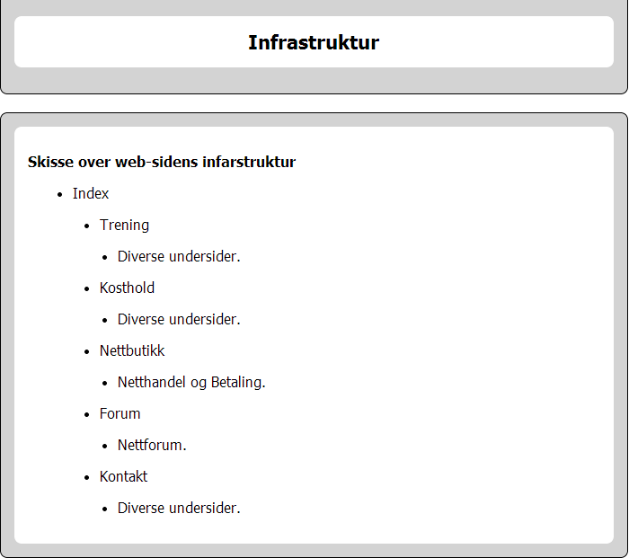
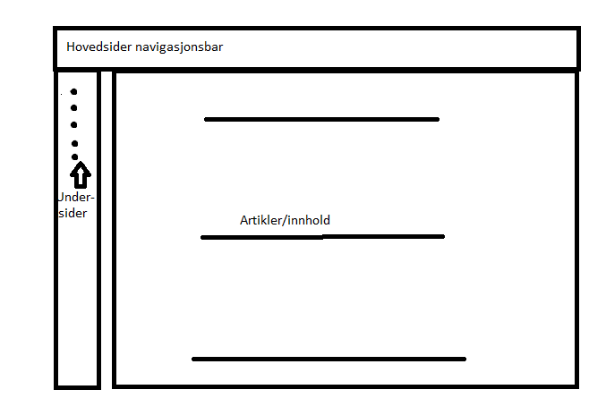
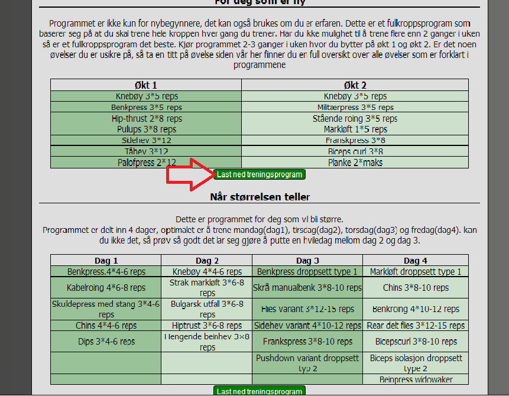
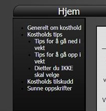
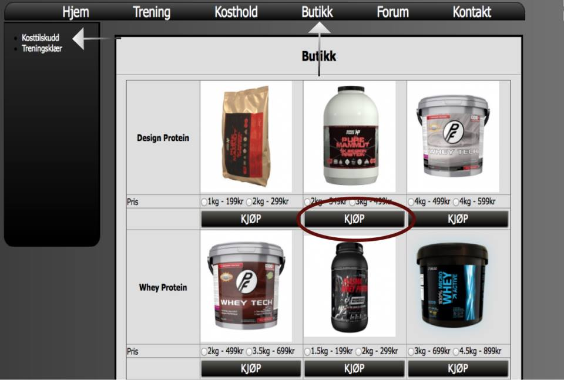
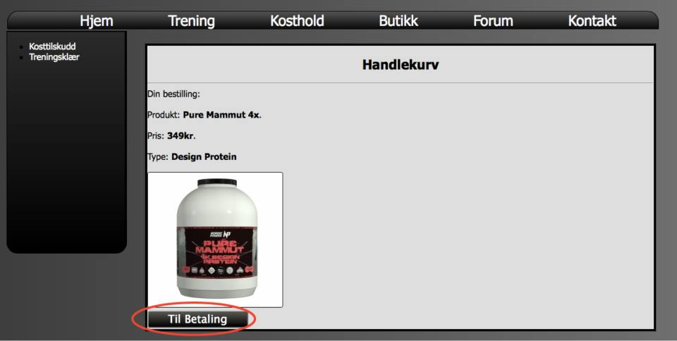
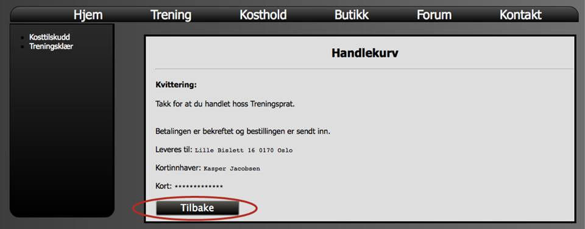
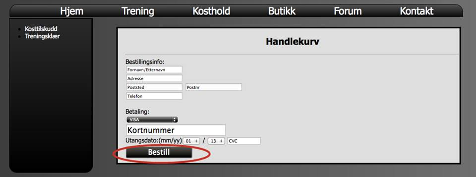

Meget kortfattet hovedinnhold.- Treningsprat er en nettside som inneholder, fakta om kosthold og trening, butikk, forum og en «kontakt oss» side. Du kan lese og laste ned treningsprogrammer, kjøpe artikler i butikken, lage deg bruker og diskutere i forumet. Infrastrukturen kan sees i vedlegg.
Vi har valgt å lage en nettside som skal hjelpe folk til et sunnere liv ved å formidle informasjon om trening og kosthold. Konseptet vårt har mange likhetstrekk med en normal blogg i den forstand. Leserne og brukerne kan velge å handle ting som er relevant til trening og kosthold om det skulle være aktuelt. Denne funksjonen baserer seg på PHP og HTML. Betalingsdelen har vi ikke tatt for oss da dette krever en del mer sikkerhet, men denne delen av prosjekte/web-siden er en prototype (smoke and mirrors).
Denne rapporten er skrevet som et tillegg til prosjektet ”Treningsprat”. Den er laget for å gi leseren en forståelse av hvordan vi har gått fram for å lage nettsiden. Hvilke teknologier vi har brukt, og hvorfor vi har brukt dem. Den inneholder informasjon over hvordan vi har strukturert arbeidet og gruppen generelt. Når vi satt oss ned første gang og skulle finne ut hva slags nettside vi skulle lage, prøvde vi først å finne felles interesser. Vår fellesnevner viste seg fort å være sport, idrett og spesielt styrke og kondisjonstrening. Vi bestemte oss for å lage en treningsrelatert nettside.
Ettersom råd og metoder for trening og kosthold endres hele tiden av eksperter har vi lest oss opp om trening og kosthold på mange forskjellige nettsteder og hentet en del fakta (se kilder). Treningsprogrammene er hentet fra ulike steder, hvor noen på gruppa har erfaring med programmene. Måten vi samlet fakta til våre sider på, det er at vi først måtte finne ut hva vi skulle ha i våre sider, hvilke artikler vi syntes var viktige og informative for leserne. Vi måtte finne de sidene som ga mest mulig informasjon og mening til den alminnelige mann i gaten om kosthold, hva man bør spise, hva man ikke skal spise og om hvilke næringsinnhold forskjellige matvarer har. Så vi begynte å lete i forskjellige treningssider for å finne de beste, søkte litt rundt for å hente de beste rådene fra forskjellige sider. Så det ble en del leting for å finne de riktige sidene som kunne passe godt med den alminnelige mann. Det fant vi relativt kjapt, med litt søking rundt på de riktige sidene og ved å lese over det som stod der for å så sjekke det opp mot vår egenkunnskap, om det var noe vi ville legge til.
Etter at vi hadde bestemt oss for hvilke design vi skulle gå for, satt vi oss sammen med en gang å lagde en «grunnmur» det vil si at vi lagde HTML fundamentet til siden så vi fikk kommet i gang. Etter vi hadde gjort det ga vi alle på gruppen et hovedområde som skulle være ferdig til et tidspunkt, dette gjorde at vi kunne arbeide uavhengig av hverandre slik at vi kunne ikke ødelegge hverandres kode selv om vi jobbet hjemme. For å sjekke progresjon og om vi hadde noen problemer møttes vi jevnlig, alltid flere ganger i uken for å sammenligne å hjelpe hverandre. Når vi alle var ferdig med vår lille bit som vi hadde gjort, satt vi oss sammen for å sette alt dette sammen med riktige tagger og slikt. Vi snakket sammen underveis om hvilke tagger vi skulle bruke så dette gikk veldig greit. Vi valgte å bruke prototyping som arbeidsmetode, hvor vi laget en skisse i «paint»
dette gjorde vi for å få en liten visuell visning av hva vi skulle gjøre før vi hadde gjort det. Vi diskuterte rundt skissen om hvor vi skulle plasere ulike funksjoner, og ble samkjørte på vår idè. Vi brukte Paint fordi det er lett å endre design på det, og vi kunne få en brukbar indikasjon på hva vi ville ha. Vi valgte å gjøre det slik fordi vi ikke ville komme til det punktet der vi hadde laget siden å egentlig ikke var fornøyd, men hadde kommet for langt til å snu. Men i Paint trenger man ikke tenke på dette siden det bare tar noen minutter for å få et nytt design på plass. Da vi laget dette designet da så vi også hva vi ville ha med i siden, hvor vi ville ha ting. Vi brukte mye tid på denne skissen, når vi først vi fikk designet på plass slik at vi hadde noe håndfast å jobbe mot, som da gjorde det mye lettere å starte å gjennomføre dette. Et annet aspekt med å ha en slik prototype, var at vi var ikke helt avhengige av at alle var til stedet under enhver tid. Vi kunne jobbe hjemme, og litt hver for oss, siden alle viste hvordan siden skulle se ut å hva som skulle være med.
Vi har brukt github som verktøy for å kunne jobbe bedre sammen. Vi har møtt hverandre jevnlig på skolen/hjemme for å diskutere og bli enige om utviklingen av siden. For at sammarbeidet skulle bli best mulig satte vi oss ned med en gang oppgaven var utgitt og begynte å diskutere hva skulle lage og forsikret oss om at alle var enige. Vi utnevnte deretter en prosjektleder, som skulle ha ansvar for å sette opp når vi skulle møtes og hva som skulle være ferdig når. For at alle i gruppa skulle være like mye involvert byttet vi prosjektleder hver uke. Sammarbeidet i gruppa har fungert veldig bra, og alle har vært med på utviklingen og bidratt like mye.
På treningsprogram sidene har vi en funksjon som gjør det mulig å laste ned treningsprogrammene som filer på din personlige pc (se vedlegg nr X). Ved å trykke på knappen blir filen lastet ned i .docx format, noe som gjør det mulig for brukeren å endre og skrive ut programmet. Her har vi brukt følgende kode : input type="submit" onClick="window.location.href='dokument.docx'".
Funksjonen dere ser i vedlegget, er en «uordna liste» som har skjulte list elementer som du finner på trening og kosthold siden. Det er en knapp som gjør at noen alternativer som egentlig er skjult kommer frem, den er også «togglet» som gjør at de går tilbake igjen hvis du trykker på knappen igjen. Så da får du en «les mer» «les mindre» effekt. Dette er en funksjon som gjør siden mere ryddig, å du slipper å gå i surr med alle undersidenene. Du kan da også ha mindre overkrifter å ha undersider til disse, uten at du ser dem hele tiden. Denne funksjonene er brukt ved bruk ved hjelp av «Javasckript».
Butikk I butikken finnes det 4 steg fra valg av produkt til betaling og kvittering. Vi prøvde oss med mange forskjellige metoder for å lage en slags nettbutikk. Vi endte opp med å bruke PHP med ”if(isset)” og ”$_REQUEST” for å sende produktinformasjonen videre til betalingssidene. Vi lagde en if-setningen for hvert produkt for å kunne få fram bilde, pris, navn og valg av størrelse(for klær). Du kan se betalingsprosessen steg for steg i vedlegg nr. x. Butikkens produkter er lånt fra nordicpower.no som selger treningsrelaterte produkter og holder til i Stavanger.
   